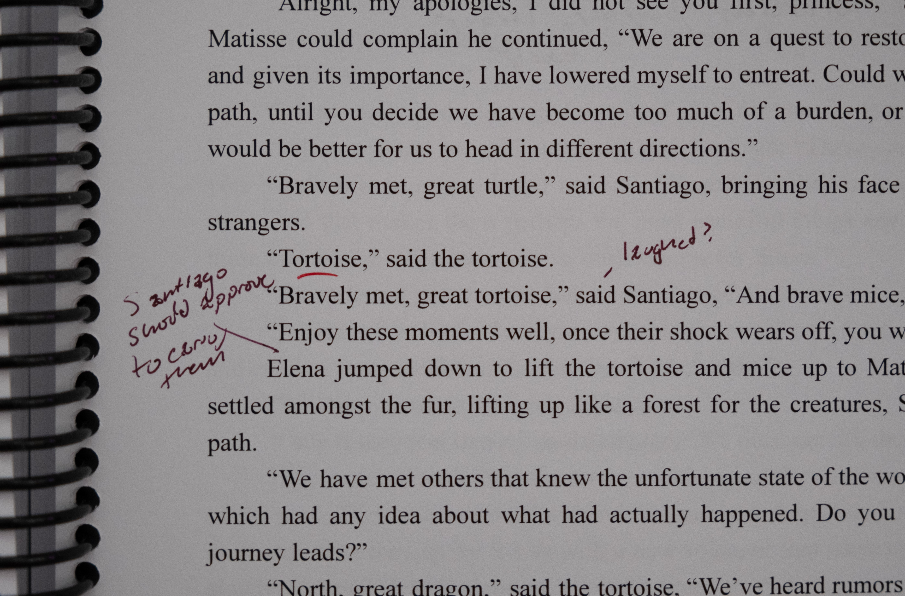
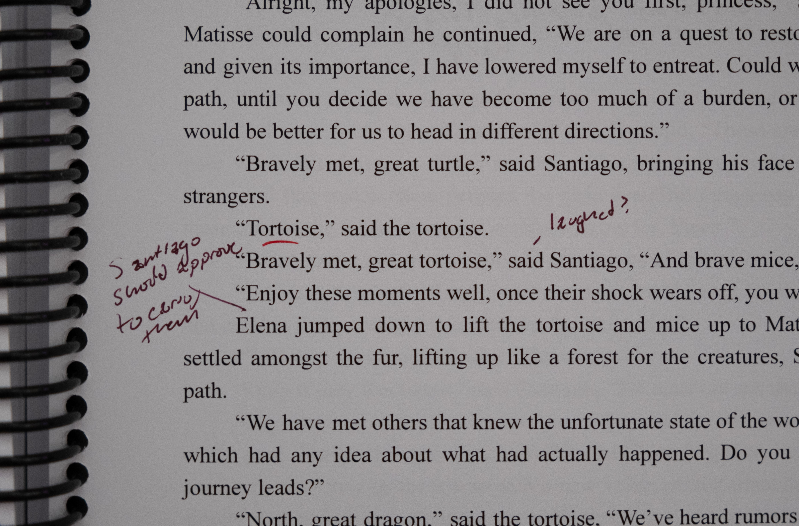

The Idea
The first scene I had of this story was the image of a girl on a beach with a single coin, seeking to make a wish. Her choices were to throw it in a talking fountain, or give it to a talking dragon.
Current Progress
Over the past year, the idea has grown tremendously, and I am currently working on draft three, sitting at 73,000 words.
So for now I am in the "editing trenches". If you are there as well, I ask that we meet up occasionally to barter supplies. I am looking for motivation in exchange for some old cans of diced tomatoes.
Goals
I plan to pursue traditional publishing, and will begin soon querying when the entire manuscript feels polished from beginning to end.
If you are interested in project updates or providing feedback on an early draft, please consider filling out this form.
 
